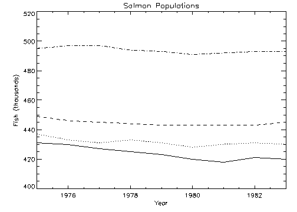

The OPLOT procedure plots vector data over a previously-drawn plot. It differs from PLOT only in that it does not generate a new axis. Instead, it uses the scaling established by the most recent call to PLOT and simply overlays a plot of the data on the existing axis.
OPLOT, [ X ,] Y [, MAX_VALUE = value ] [, MIN_VALUE = value ] [, NSUM = value ] [, / POLAR ] [, THICK = value ]
Graphics Keywords: [, CLIP= [X 0 , Y 0 , X 1 , Y 1 ] ] [, COLOR= value ] [, LINESTYLE={0 | 1 | 2 | 3 | 4 | 5}] [, /NOCLIP] [, PSYM= integer {0 to 10}] [, SYMSIZE= value ] [, /T3D] [, ZVALUE= value {0 to 1}]
Note: Many of the keyword parameters correspond directly to fields in the system variables !P, !X, !Y, or !Z. When specifying a keyword parameter name and value in a call that value affects only the current call, the corresponding system-variable field is not changed. Changing the value of a system-variable field changes the default for that particular parameter and remains in effect until explicitly changed. The system variables involving graphics and their corresponding keywords are detailed in !PI.
A vector argument. If X is not specified, Y is plotted as a function of point number (starting at zero). If both arguments are provided, Y is plotted as a function of X .
This argument is converted to double-precision floating-point before plotting. Plots created with OPLOT are limited to the range and precision of double precision floating-point values.
The ordinate data to be plotted. This argument is converted to double-precision floating-point before plotting.
The maximum value to be plotted. If this keyword is present, data values greater than the value of MAX_VALUE are treated as missing and are not plotted. Note that the IEEE floating-point value NaN is also treated as missing data.
The minimum value to be plotted. If this keyword is present, data values less than the value of MIN_VALUE are treated as missing and are not plotted. Note that the IEEE floating-point value NaN is also treated as missing data.
The presence of this keyword indicates the number of data points to average when plotting. If NSUM is larger than 1, every group of NSUM points is averaged to produce one plotted point. If there are m data points, then m /NSUM points are displayed. On logarithmic axes a geometric average is performed.
It is convenient to use NSUM when there is an extremely large number of data points to plot because it plots fewer points, the graph is less cluttered, and it is quicker.
Set this keyword to produce polar plots. The X and Y vector parameters, both of which must be present, are first converted from polar to Cartesian coordinates. The first parameter is the radius, and the second is expressed in radians.
For example, to make a polar plot, use the command:
OPLOT, /POLAR, R, THETA
Controls the thickness of the lines connecting the points. A thickness of 1.0 is normal, 2.0 is double wide, etc.
See Direct Graphics Keywords for the description of the following graphics and plotting keywords:
CLIP , COLOR , LINESTYLE , NOCLIP , PSYM , SYMSIZE , T3D , ZVALUE
; Create a simple dataset:
D = SIN(FINDGEN(100)/EXP(FINDGEN(100)/50))
; Create an X-Y plot of vector D:
PLOT, D
; Overplot the sine of D as a thick, dashed line:
OPLOT, SIN(D), LINESTYLE = 5, THICK = 2
Additional data can be added to existing plots with the OPLOT procedure. Each call to PLOT establishes the plot window (the rectangular area enclosed by the axes), the plot region (the box enclosing the plot window and its annotation), the axis types (linear or log), and the scaling. This information is saved in the system variables !P, !X, and !Y and used by subsequent calls to OPLOT.
Frequently, the color index, line style, or line thickness parameters are changed in each call to OPLOT to distinguish the data sets. See LINESTYLE for a table describing the line style associated with each index.
The figure below illustrates a plot showing all four data sets. Each data set except the first was plotted with a different line style and was produced by a call to OPLOT. In this example, an (11, 4) array called ALLPTS is defined and contains all the scores for the four categories using the array concatenation operator. Once this array is defined, the IDL array operators and functions can be applied to the entire data set, rather than explicitly referencing the particular sample.
|
 |
First, we define an n -by-4 array containing all four sample vectors. (This array is also defined by the plot01 batch file.)
ALLPTS = [[COHO], [SOCKEYE], [HUMPBACK], [CHINOOK]]
The plot in the preceding figure was produced with the following statements:
; Define variables:
@plot01
; Plot first graph. Set the y-axis min and max
; from the min and max of all data sets. Default linestyle is 0.
PLOT, YEAR, COHO, YRANGE = [MIN(ALLPTS), MAX(ALLPTS)], $
TITLE='Salmon Populations', XTITLE = 'Year', $
YTITLE = 'Fish (thousands)', XRANGE = [1975, 1983], $
/XSTYLE
; Loop for the three remaining scores, varying the linestyle:
FOR I = 1, 3 DO OPLOT, YEAR, ALLPTS[*, I], LINE = I
Note: If IDL does not find the batch file, the required directory may not be in your IDL search path. All of the files mentioned are located in the examples/doc/plot subdirectory of the IDL distribution. By default, this directory is part of IDL ’s path; if you have not changed your path, you will be able to run the examples as described here. See !PATH for information on modifying IDL ’s path.
You can use the XYOUTS procedure to label data lines. See XYOUTS Procedure for the code needed to label each line of data in the previous example.
|
Original |
Introduced |